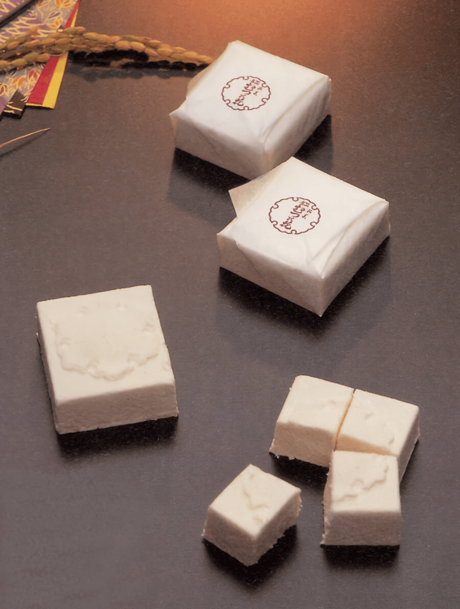
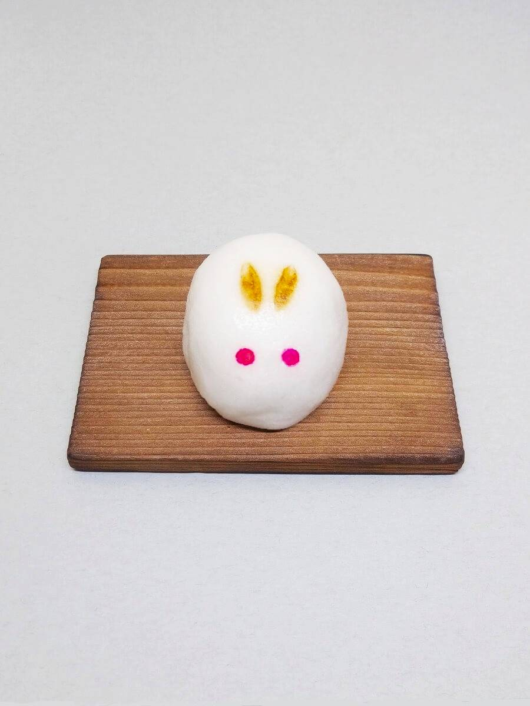
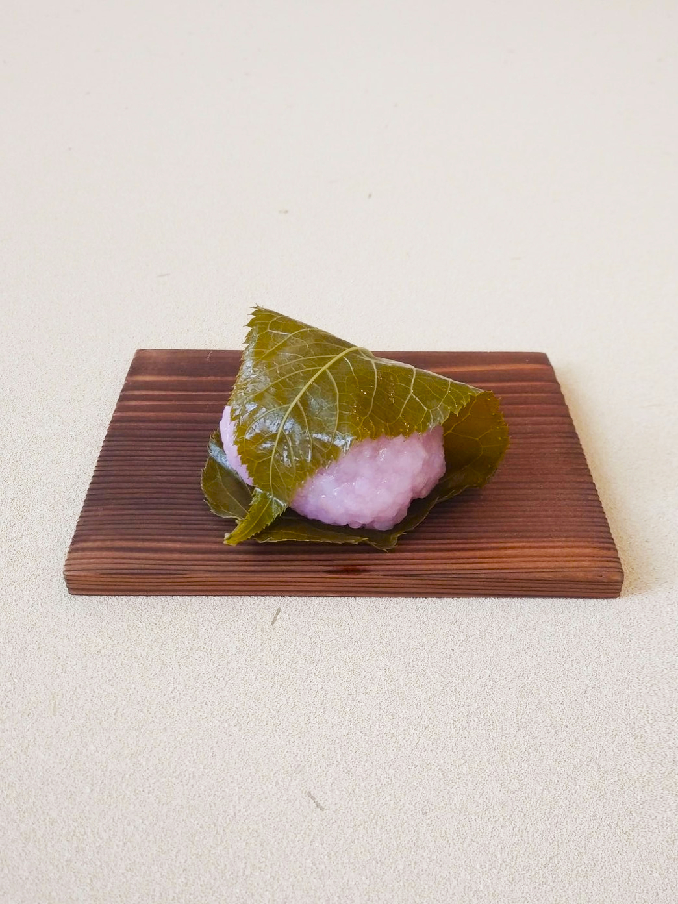
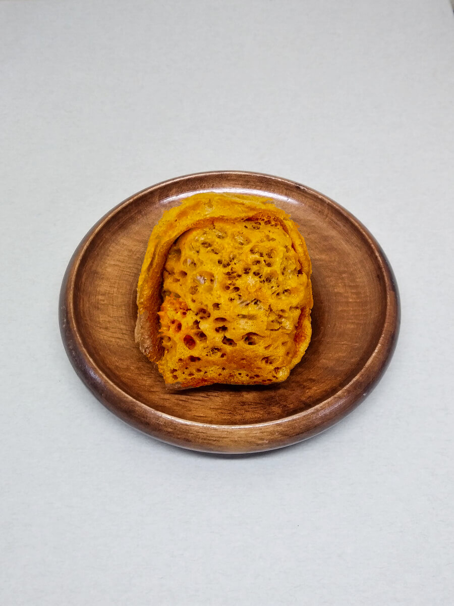
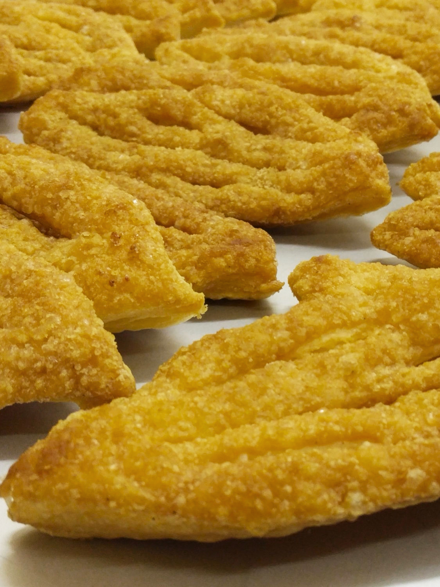

- むつの花

厳選したもち米と和三盆糖を原料に仕上げました。長く茶道の友として、進物としてご重用いただく開業以来の銘菓です。
販売期間 通年
賞味期限 十四日間
特定原材料など なし
価格 四個入 八四〇円
- 粉菓子
越後の国の伝統の小豆こし餡入りの落雁です。寒梅粉の郷土のもち米の風味をお楽しみください。
販売期間 通年
賞味期限 七日間
特定原材料など なし
価格 一個 一八〇円
- 笹団子
昔ながらの越後の笹団子です。笹の風味とこしのある生地をおたのしみいただけます。
販売期間
消費期限 二日間
特定原材料など なし
価格 一個 二三〇円
- うさぎ上用

加賀丸芋と上新粉のきめ細やかな生地と、小豆皮むきあんの上品なお饅頭です。
販売期間 秋
消費期限 四日間
特定原材料など 山芋
価格 一個 二〇〇円
- うぐいす

抹茶と新潟の青きな粉をまぶした軟らかな求肥とこし餡の生菓子です。
販売期間 冬
消費期限 三日間
特定原材料など 大豆
価格 一本 一八〇円
- 桜餅

蒸かしたてのコガネモチの桜餅です。口当たり滑かなこし餡を包みました。
販売期間 春
消費期限 二日間
特定原材料など 小麦（焼き皮）
価格 一個 一八〇円
- 草団子

薫りよい蓬と特上の新粉で瑞々しい小豆こし餡を包みました。
販売期間 春
消費期限 二日間
特定原材料など なし
価格 一個 一四〇円
- 花見団子

春のお菓子です。三色のお団子で 桜の花、白酒、蓬を表しました。
販売期間 春
消費期限 二日間
特定原材料など なし
価格 一個 一〇〇円
- 柏餅

上新粉のういろうで瑞々しい小豆こしあんをとじました。
販売期間 夏
消費期限 二日間
特定原材料など なし
価格 一個 一八〇円
- 若鮎
生姜味の生地に求肥餅が一本入っています。香味も快い夏のお菓子です。
販売期間 夏
消費期限 三日間
特定原材料など 卵、小麦
価格 一個 一八〇円
- 松笠

黒糖生地のふくさやきです。柔らかく炊いた粒あんを包みました。
販売期間 秋から冬
消費期限 三日間
特定原材料など 卵、小麦
価格 一個 一八〇円
- 越の焼栗
新栗の風味にこだわり見附市堀溝の栗を生栗から蒸して仕上げています。
販売期間 秋から冬
消費期限 三日間
特定原材料など なし
価格 一個 三二〇円
- きんつば

北海道産大納言の新小豆のうま味を楽しめるきんつばです。
販売期間 冬から春
消費期限 七日間
特定原材料など 卵
価格 一個 二二〇円
- 胡桃

信州の和ぐるみを添えた小豆粒あんの東饅頭です。第二四回全国菓子大博覧会で名誉総裁賞を受賞しました。
販売期間 通年
消費期限 七日間
特定原材料など 卵、小麦、胡桃
価格 一個 一五〇円
- 松の実

黄身あんをほろりと崩れるクッキー生地で包んでいます。ひび割れた生地に松の実を添えた上品な焼菓子です。
販売期間 通年
消費期限 七日間
特定原材料など 卵、小麦、乳
価格 一個 一五〇円
- 栗饅頭

蜜漬けの栗を微塵に刻みいれ餡を炊きました。艶のある生地が栗の風味を閉じ込めていています。
販売期間 通年
消費期限 七日間
特定原材料など 卵、小麦
価格 一個 一六〇円
- かすてら饅頭

カステラ生地で黄身あんを包んだ洋風和菓子です。
販売期間 冬から春
消費期限 七日間
特定原材料など 卵、小麦
価格 一個 一六〇円
- 花篝

長岡市横枕町地酒「お福正宗」を含ませ、小豆こしあんを包んだ桃山です。
販売期間 通年
消費期限 七日間
特定原材料など 卵
価格 一個 一六〇円
- 花いくさ

果実のような酸味のあるチョコレートを包んだと白あんとミルク風味の黄身あんの桃山です。
販売期間 春から冬
消費期限 五日間
特定原材料など 卵、乳、大豆
価格 一個 一六〇円
- 最中

創業以来の製法の餡を特注の強めに焼き付けた焦がし種で挟みました。
販売期間 通年
消費期限 七日間
特定原材料など なし
価格 一個 一八〇円
- ちょこっと最中

ハートのココアのもなかです。
販売期間 通年
消費期限 七日間
特定原材料など なし
価格 一個 一五〇円
- 金倉山

バターカステラの中にシロップ漬けのフルーツをちりばめ、実り豊かな故郷の山並みを表現しました。
販売期間 通年
消費期限 十五日間
特定原材料など 卵、乳、小麦、
大豆、リンゴ、オレンジ
価格 一個 一八〇円
- フロランタン

オレンジののアーモンドヌガーとバニラのサブレのフロランタンです。
販売期間 通年
賞味期限 一ヶ月間
特定原材料など 卵、乳、小麦、
アーモンド、オレンジ
価格 一袋 一六〇円
- リーフパイ

カルピスバターときび砂糖の上品なパイです。
販売期間 通年
賞味期限 一ヶ月間
特定原材料など 卵、乳、小麦
価格 一袋 一八〇円
- エンガディナー

蜂蜜とくるみのやわらかいキャラメルを挟んだ焼菓子です。
販売期間 通年
賞味期限 一か月間
特定原材料など アーモンド、
小麦、乳、卵、くるみ
価格 一袋 一六〇円
- かほり 蔵のかほり

シャリシャリとした歯触りの快いお干菓子です。
販売期間 夏から秋
賞味期限 二ヶ月間
特定原材料など 個別に記載
価格 一袋 三六〇円
- 干菓子

阿波和三盆糖を用いた落雁を紅白に打ち分けました。
販売期間 通年
賞味期限 二ヶ月間
特定原材料など なし
価格 五個入 二八〇円
- 胡桃玉

信州の濃厚な和ぐるみと新潟県産大豆のきな粉のすはまです。
販売期間 冬から春
賞味期限 一ヶ月間
特定原材料など 胡桃、大豆
価格 五個入 二八〇円
- 栗玉

蜜漬の栗を濾して餡とし、和三盆を塗し表面を歯ざわりよく固めました。色も鮮やかな贅沢なお干菓子です。
販売期間 冬から春
賞味期限 一ヶ月間
特定原材料など なし
価格 五個入 二八〇円
- 香龍
梅と柚子の餡をおぼろ種ではさみ竜の焼印を押しました。蓬平町の髙龍神社に因んだ優美なお菓子です。
販売期間 通年
賞味期限 一ヶ月間
特定原材料など なし
価格 八〇円
- 石の里

名前を昔、石の名産地として栄えた村松の地に因む卵と和三盆糖、寒天のお干菓子です。
販売期間 通年
賞味期限 三ヶ月間
特定原材料など 卵
価格 五枚入 一八〇円
- くず湯
古くからの滋味に富んだ葛の味をお楽しみいただけます。塩漬けの花を入れた桜と抹茶の二種類です。
販売期間 通年
賞味期限 三ヶ月間
特定原材料など なし
価格 一袋 一三〇円
- 煉羊羹

手間と技術を要するお菓子です。家伝の味をご堪能ください。
販売期間 通年
賞味期限 三ヶ月間
特定原材料など なし
価格 一本 九〇〇円
- くずきりそうめん

氷の細片を入れると味わいが引きたちます。本葛の風味をお試しください。
販売期間 夏から秋
消費期限 冷蔵にて十日間
特定原材料など なし
価格 一個 二八〇円
- 栗きんつば

ふっくらとした栗甘露煮を、粒を残した大納言小豆に添えました。冷蔵庫で冷やしていただくとより一層おいしくお召上がりいただけます。
販売期間 夏から秋
賞味期限 二ヶ月間
特定原材料など なし
価格 一個 二八〇円
- 梅のつゆ 青梅

やや硬めに仕上げた自家製の梅酒のゼリーの中に青梅を一つ浮かべましたました。涼味ある夏限定のお菓子です。
販売期間 夏から秋
賞味期限 二ヶ月間
特定原材料など なし
価格 一個 二八〇円
- 梅のつゆ しそ梅
やや硬めに仕上げた自家製の赤紫蘇のゼリーの中に青梅を一つ浮かべました。涼味ある夏限定のお菓子です。
販売期間 夏から秋
賞味期限 二ヶ月間
特定原材料など なし
価格 一個 二八〇円
- 花ぬすびと
やや硬めに仕上げた水色のゼリーの中に桜花塩漬けを一つ浮かべています。涼味ある夏限定のお菓子です。
販売期間 夏から秋
賞味期限 一ヶ月間
特定原材料など オレンジ
価格 一個 二八〇円
- 水羊羹 ほたる
塩と白小豆甘納豆の水羊羹です。喉越しよい夏の味覚です。
販売期間 夏
消費期限 冷蔵に三日間
特定原材料など なし
価格 一個 一八〇円
- 水羊羹 おぼろ
道明寺羹の食感の楽しい水羊羹です。のど越しのよい夏の味覚です。
販売期間 夏
消費期限 冷蔵にて三日間
特定原材料など なし
価格 一個 一八〇円